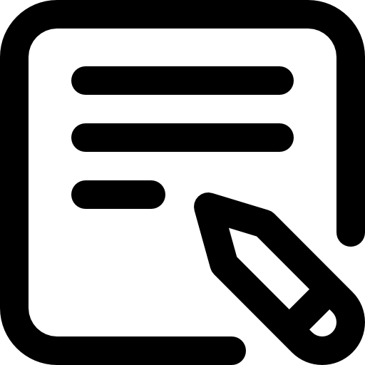

INFORMATION AND COMMUNICATION TECHNOLOGY - Computer Systems Servicing (CSS)
Lesson 1: Understanding Hand Tools: Types, Functions, and Proper Selection for Task Requirements

Observe and List:
Kindly observe these pictures.
(Pictures Generated by AI)
Instructions:
In a text box provided below, write your name.
Based on the pictures shown above, list the name of each device and their uses.
What tools do you think would associate with each of them if they need maintenance, cleaning, or repairing? Jot down your answers and justifications on the provided text box.
Guide Questions:
What I need to know?
Objectives:
At the end of the lesson the student should be able to:
Identify appropriate type of hand tools needed for the task
Demonstrate the correct method when selecting and matching the right tools
Show responsibility in selecting tools by ensuring the chosen tools align with task requirements and servicing standards.
What to know
Understanding Hand Tools: Types, Functions, and Proper Selection for Task Requirements
(Generated by AI)
Hand tools are very important in performing various tasks efficiently and effectively. Selecting the right tool for a specific task ensures precision, safety, and productivity. In this lesson, you will learn about different types of hand tools, their functions, and how to choose the most appropriate tool based on task requirements.
Planning
It is the first step in analyzing a task. It focuses on defining goals and steps to achieve them. The planning function involves establishing goals and arranging them in logical order.
What do we need to consider when planning a task?
Identifying the task objectives – it must be clearly defined what do we need to attain and to be done.
List the equipment or tools needed for the task – determine which tools are required for the specific task to perform effectively.
Estimate the time duration and effort needed – properly consider the time required to complete the specific task and how much intensity of effort is needed.
Examine the Proper Precautions – identify the potential harm or risks present in the task and ensure to avoid them by ensuring preparation of proper protective equipment in the area.
Assess the workplace – investigate and inspect each of every corner of the workplace for damages, space limitations, or any workplace guideline.
Example: You are tasked to assemble a computer in the client’s house. Before executing the action, you need to consider first to identify the primary objectives of the task and that is to properly assemble a computer. Next is to list the tools needed for the task (Screwdrivers, anti-static wrist straps, etc). you need to ensure that your workplace is clean and safe, and finally estimate how long the computer task will take.
But how do we know how hard the task to be performed and how it would affect our considerations in planning?
Task Complexity
It is the level of difficulty of a task, and the amount of mental effort required to complete it. And the complexity of a task could affect the considerations of selecting tools and techniques required to perform.
Here are the kind of task complexities for you to understand:
Simple Tasks - this task requires minimal tools and can be completed with basic prior knowledge of a person (e.g., tightening a loose screw with a screwdriver)
Moderate Tasks - involves multiple steps and may require specialized tools (e.g., assembling a motherboard using a variety of screwdrivers and precision tools)
Difficult Tasks - Demand advanced skills, multiple tools, and careful execution. (e.g., tightening a loose screw with a screwdriver)
Task complexity is defined as the measure of how hard a particular task is to complete. Some tasks can be straightforward and use simple tools, but others are highly complicated and require many steps, specific tools, and skillful techniques. Workers can minimize mistakes and improve productivity by comprehensively understanding the task complexity, breaking the task down into effective steps, and creating a proper planning beforehand. Together, these two factors improve the efficiency, safety, and quality of work outcomes.
Hand Tools
is a device for performing work on a material or a physical system using only hands. The hand tools can be manually used employing force, or electrically powered, using electrical current. Tools are basic purpose hand manual instruments used to buildup, repair, or check computer hardware in Computer System Servicing. These tools are also categorized according to their functions to ensure handling of computer components is precise, safe, and efficient.
Types of Hand Tools:
1. ESD (Electrostatic Discharge) Tools - These tools help protect sensitive electronic components from static electricity, which can cause damage.
Examples of ESD (Electrostatic Discharge) Tools:
Anti-static wrist strap - Worn on the wrist and connected to a grounded surface to prevent electrostatic discharge while handling computer parts.
Anti-static mat - Used to stand on or place hardware on to prevent static electricity from building up.
2. Handheld Screwdrivers and Nut Drivers - Used for assembling and disassembling computer parts such as cases, motherboards, and hard drives.
Examples of Handheld Screwdrivers and Nut Drivers:
Philips head screwdriver - Used to loosen or tighten crosshead screws.
Flat head screwdriver - Used to loosen or tighten slotted screws.
Nut driver - Helps in tightening or loosening small hexagonal nuts used in computer hardware.
3. Cutting and Stripping Tools - These tools are used for cutting and stripping cables and wires in computer maintenance and networking.
Examples of Cutting and Stripping Tools:
Wire stripper - Removes insulation from electrical wires without damaging the copper inside.
Side cutter pliers - Used for cutting wires, zip ties, and small plastic components.
4. Diagnostic Tools - Tools used to test and troubleshoot hardware components.
Examples of Diagnostic Tools:
Multimeter - Measures voltage, resistance, and continuity in power supplies and circuits.
LAN Tester - Measures LAN connections, certifies cables, and troubleshoots any network issues that might arise.
5. Cleaning Tools - Tools that ensure computer components are not damaged during cleaning while keeping them tidy and dirt-free.
Examples of Cleaning Tools:
Lint-free cloth - Used to clean different computer components without scratching or leaving debris.
Compressed air - Used to blow away dust and debris from different computer parts without touching the components.
Cable ties - Used to bundle cables neatly inside and outside of a computer.
Parts organizer - Used to hold screws, jumpers, fasteners, and other small parts and prevents them from getting mixed together.
(The images used in the topics are from https://www.studocu.com/ph/document/capiz-state-university/bachelor-of-science-in-criminology/css-7-8-week-1-using-and-maintaining-hand-tools/62307888)
Proper Tool Selection
A tool is a handheld device that aids in accomplishing a task. Tools range from a traditional metal cutting part of a machine to an element of a computer program that activates and controls a particular function.
Preparing for the task to be undertaken includes proper tool selection.
How do you determine the optimal tool for a job? Begin by thoroughly grasping the project's requirements. Next, create a plan for the project, taking into account the order of operations
Choosing the best tool for each step necessitates training in its correct operation, practical experience in its safe handling, and adherence to the maker's guidelines and directions for that particular tool.
When acquiring the tool, ensure that all accompanying accessories and expendable components, as advised by the manufacturer, are included. Furthermore, appropriate expendable components should be chosen and employed according to their respective manufacturer's instructions.
What to Do?
Imagine you're working as a tool technician in a virtual hand tool workshop. You receive daily requests from clients who need specific repairs done using hand tools. You have your document requests from the clients.
Prepare A4 size bond paper that will serve as your document for clients. You can use canva or microsoft word
In the document, there are three cases reported by the clients. Kindly copy the case given by the table below:
After reading all the client's request, you must select the correct tool and explain why you chose it, thinking about how it will help get the job done effectively and safely. Copy the table given at the top using microsoft word or canva and write down your choice. Upload your work through png or jpg file format
Upload a PNG or JPG file
In this exercise you were playing the part of a tool technician, making important decisions about which hand tools to use for certain servicing tasks. Choosing the appropriate tool for the job is key to your efficiency, accuracy, and safety when working with computer devices. When you know what each tool does, you will be able to repair any hardware problems easily.
What to Consider?
Always remember:
The right tool makes the task easier and safer ✔
Using the wrong tool can damage components or cause inefficiencies ✔
Proper handling and selection of tools is a fundamental skill in computer system servicing ✔
Apply and Perform
Performance Task: Labtask
Instructions:
You will be grouped by your teacher into four groups. Each group will be assigned a specific task (e.g., assembling a desktop computer, repairing a malfunctioning device, or disassembling a TV). The task will require a set of tools for successful completion
Your group will be given a description of the task. Based on the task requirements, analyze and identify which hand tools are necessary
In the laboratory, you will demonstrate the correct method of selecting tools. (For example, if the task involves working with screws, demonstrate why you chose the right screwdriver (size, type) and not another tool.)
Once you have selected the appropriate tools, carry out the task using the tools correctly.
After completing the task, write a short report detailing the tools used, how you selected them, and how they helped you complete the task. Include any challenges faced and how you overcame them. Submit the report in a jpg or png format in the submission button at the bottom. This is the format for a short report:
The Criteria for the Performance Task:
Submission of the performance task (PNG or JPG)
What I know
Now that you've had passed through the contents and activities of this lesson, it's time to reflect on what you learned. Answer this short quiz to check your knowledge of hand tools, their classifications, proper selection, and usage in computer system servicing. Consider this applying what you’ve learned, so answer each question carefully. Good luck!
Just kindly screenshot this QR Code and scan it to access the Short-Quiz via Google Forms.
What have I learned?
The selection of the appropriate tool for the task is much more convenient when you consider the safety, efficiency, and successful task completion. Employing the proper tools eliminates the potential for injury, reduces damage to components, and makes it possible to get the work done with accuracy and ease. In computer system maintenance, one minor error—such as an incorrect screwdriver or failure to use ESD protection—can create expensive mistakes.
As you think about this lesson, think about how ethical tool choice applies to real-life servicing situations. In a sheet of paper make a reflection-essay about what you learned from the lesson, use the guide question to organize your thinking and relate your learning to real-world applications.
Guide Questions:
References:
Aklas State University. (n.d.). Lesson 1: Using and maintaining hand tools. Studocu. Retrieved from https://www.studocu.com/ph/document/aklan-state-university/computer-programming/lesson-1-using-and-maintaining-hand-tools/100587176
Capiz State University. (n.d.). CSS 7-8 Week 1: Using and maintaining hand tools. Studocu. Retrieved from https://www.studocu.com/ph/document/capiz-state-university/bachelor-of-science-in-criminology/css-7-8-week-1-using-and-maintaining-hand-tools/62307888
RS Components. (n.d.). Network testers. Retrieved from https://ph.rs-online.com/web/c/test-measurement/network-test-measurement/network-testers/
Scribd. (n.d.). Hand tools and equipment in computer system servicing 1. Retrieved from https://www.scribd.com/document/720547682/Hand-tools-and-equipment-in-Computer-System-Servicing-1
Scribd. (n.d.). ICT Lesson 1: Use hand tools. Retrieved from https://www.scribd.com/document/479539295/ICT-Lesson-1-Use-Hand-Tools
R. E. (1986). Task complexity: A review and analysis. ResearchGate. Retrieved from https://www.researchgate.net/publication/243768060_Task_Complexity_A_Review_and_Analysis
 What I need to know?
What I need to know?

 What to Do?
What to Do?
 What I know
What I know
 What have I learned?
What have I learned?